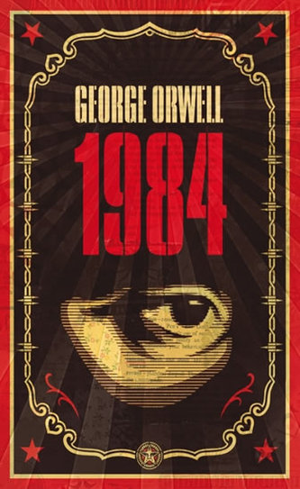

1984 (v anglickém originále vypsáno slovy Nineteen Eighty-Four, pracovním názvem Poslední člověk v Evropě) je antiutopický (dystopický) román anglického spisovatele George Orwella dokončený v roce 1949, publikován 8. června téhož roku v Londýně nakladatelstvím Secker and Warburg. Tato kniha, z níž pochází známý výrok Velký bratr tě sleduje!, je jedním z nejzásadnějších literárních děl 20. století. Popisuje svět, v němž vládne absolutní totalita, kterou živí permanentní, „udržovací“ válka mezi třemi kontinentálními mocnostmi. Společnosti vládne Strana a cokoli proti kolektivnímu myšlení Strany je krutě trestáno, lidská individualita se stává zločinem. O knize Časopis Time zařadil 1984 mezi stovku nejvlivnějších knih od roku 1923.[1] Po skandálu špehování NSA zveřejněném v roce 2013 Edwardem Snowdenem prodej knihy rekordně stoupl.[2] V Rusku zájem o knihu prudce vzrostl na jaře 2022, poté, co putinistický režim během útoku proti Ukrajině zakázal označovat boje slovem „válka“.[3] Název knihy vznikl přehozením posledních dvou čísel roku, ve kterém tuto knihu dopsal (1948). Zrcadlení 1984 v realitě Kniha 1984 je ovlivněna dobou svého vzniku a přímo reaguje na totalitní režimy, ale na rozdíl od Farmy zvířat, kde se jedná o jasný stalinismus, tak zde poukazuje zejména na skrytou totalitu, což si uvědomíme především ve chvíli, kdy Winston vysvětluje, že obyvatelstvo Oceánie se rozděluje na členy Vnitřní strany (2 % obyvatel, cca 6 milionů), kteří skutečně vládnou, členy Vnější strany, kteří pracují pro stát a vykonávají jeho vůli (členem je i Winston) a proletariát, který tvoří 85 % společnosti. Proléti jsou považováni za méněcenné, žijí ve velmi chudých poměrech, stát se o ně nestará a nechává jim relativní volnost, dokonce je ani nesleduje tak jako členy Vnější strany. Autor ale také vycházel ze svých zkušeností s válečnou realitou ve Velké Británii. Orwell se pokusil o volnou extrapolaci svých zkušeností s různými režimy do budoucnosti. V některých aspektech blízko fiktivnímu systému Oceánie je dnes stalinistická diktatura v KLDR.[4] Dostupnost textu Původní text je, stejně jako většina Orwellovy tvorby, dostupný online v mnoha kopiích, jelikož je public domain v Rusku, Kanadě a Austrálii. Na internetu se vyskytuje i český překlad Evy Šimečkové s doslovem Milana Šimečky. Do češtiny dále knihu přeložili Edita Kovalová (2019, Infoa), Luboš Snížek (2021, Maťa), Petra Martínková Kůsová (2021, Argo, komiks), Milan Soutor (2021, Kontrast, grafický román). V tehdejším Československu vznikal Orwellův překlad v roce 1983–84 v undergroundových podmínkách samizdatu (tajné rozdělování práce na překladu, šíření přes známé, psaní na stroji s deseti „kopíráky“…). Jeden z překladatelů se v doslovu jednoho z překladů zmínil, že v době překládání zažíval pocity velmi podobné některým momentům z knihy.[5] V květnu 2022 byl prodej románu zakázán Lukašenkovým režimem v Bělorusku.[3] Děj Hlavním hrdinou románu je úředník, soudruh Winston Smith, který žije roku 1984 v Londýně ve fiktivní zemi Oceánii. Vládne velmi tvrdá diktatura v čele s tzv. Velkým bratrem. Oficiální ideologie se nazývá Angsoc (původně anglický socialismus, v anglickém originále knihy Ingsoc) a její ústřední hesla zní: Válka je mír Svoboda je otroctví Nevědomost je síla Životní úroveň je bídná a zhoršuje se. Winston pracuje na Ministerstvu pravdy, jež se zabývá manipulováním minulosti, upravování dokumentů tak, aby byly stále platné. Winstonovou prací je upravovat stará čísla novin. Oceánie vede střídavě válku se zeměmi Eurasie a Eastasie. Pokud se změní situace, ze spojence se stal nepřítel a z nepřítele spojenec, Winston a další úředníci přepisují všechny články, které v minulosti vyšly. Velký bratr totiž nikdy nemění svá rozhodnutí, má absolutní pravdu. Podobně se přepisují předpovědi průmyslové výroby, válečného vývoje apod. Ve skutečnosti se nelze spolehnout na pravdivost ani u letopočtu. Winston se nedokáže bránit myšlenkám na minulost. Postupně začíná pátrat, jaký byl život před nastolením diktatury Strany a domnívá se, že nebyl takový, jak jej líčí oficiální propaganda. Přemýšlí o své matce a sestře, které zmizely, když byl malý kluk. Začíná si psát deník. Dobře ale ví, že jej, stejně jako všechny ostatní členy Strany, na každém kroku i v soukromí sleduje ideopolicie pomocí všudypřítomné techniky. Myšlenky proti Straně jsou ideozločin, který se tvrdě trestá. A člověka může prozradit i pouhý výraz tváře či mluvení ze spaní. Děti jsou ve stranické organizaci vychovávány k udávání rodičů. Během děje se do Winstona zamiluje Julie. Láska sama o sobě i sexuální touha je ideozločin, proto se oba pečlivě skrývají. S Julií o samotě mimo dosah techniky může Winston mluvit svobodně. Julie je totiž také proti straně a Winston není její první láska, ani první milenec. Jsou si ale od začátku vědomi, že ideopolicie je dříve či později odhalí a zničí. Obyvatelstvo Oceánie se rozděluje na členy Vnitřní strany (2 % obyvatel, cca 6 milionů), kteří skutečně vládnou, členy Vnější strany, kteří pracují pro stát a vykonávají jeho vůli (členem je i Winston) a proletariát, který tvoří 85 % společnosti. Proléti jsou považováni za méněcenné, žijí ve velmi chudých poměrech, stát se o ně nestará a nechává jim relativní volnost, dokud se mezi nimi neobjeví někdo, kdo by se mohl pro Stranu stát nebezpečným. Winstonovi a Julii se do rukou dostane kniha známého odpůrce režimu Emanuela Goldsteina, Teorie a praxe oligarchického kolektivismu. V ní se Winston dozvídá jak celý systém funguje, ale nedozví se proč svět vypadá právě tak. Otázka proč zůstává symbolicky nezodpovězena v celém románu. Nakonec jsou Winston i Julie zatčeni a odvedeni do cel Ministerstva lásky. Winston při těžkém mučení prozradí vše, co ví a mnohem víc. Přeje si zemřít, ale nemá možnost. Ptá se sám sebe i svých mučitelů, co po něm Strana ještě chce. Později pochopí, že cílem vůbec není dostat z vězně informace a pak jej popravit. Strana chce úplné pokoření a obrat myšlení o 180 stupňů. Chce po něm, aby upřímně miloval Velkého bratra a bezmezně mu věřil. To se zdá zhola nemožné. Ale surovost promyšleně kombinovaná s vlídnými domluvami a obdobími klidu nakonec vedou k cíli. (Svou roli v tomto vymývání mozku hraje jistě i Stockholmský syndrom.) Winston v okamžicích vrcholné hrůzy přestane dokonce i milovat Julii a je zcela pokořen. Poté se vězeň překvapivě ocitá zpátky na svobodě. Ale už je jiným člověkem. Znovu je zaměstnán na Ministerstvu pravdy, a dokonce lépe placen. Ideopolicie už se o něj nezajímá a jeho by ani nenapadlo proti něčemu protestovat, byť jen v myšlenkách. Setká se i s Julií, ale i ona ho zradila a je zcela podrobená. Winston si uvědomuje, že navzdory všemu teď Velkého bratra miluje a ctí. Čtenář ale vidí, že není jisté ani to, že Velký bratr je žijící osoba. Goldstein a jeho kniha jsou promyšleným dílem Strany. Na knize se podílelo více autorů, např. i O'Brien, který Winstonovi knihu dal a na Ministerstvu lásky ho poté vyslýchal a mučil. Děj knihy se odehrává v sedmi letech, v zemi, kde neplatí žádné psané zákony a není kam utéct. Jde o vylíčení diktatury, která vládne tak efektivně, že si lidé přestávají uvědomovat jiné možnosti, přestávají myslet. Vnímají jen hesla a strojově vytvářenou zábavu (romány, poezii i hudbu). Prakticky nikdo už na způsobu života, který lze shrnout do několika hesel, nevidí nic špatného.
